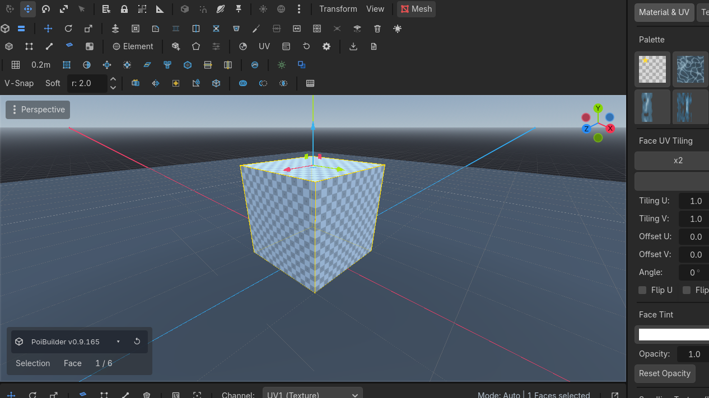
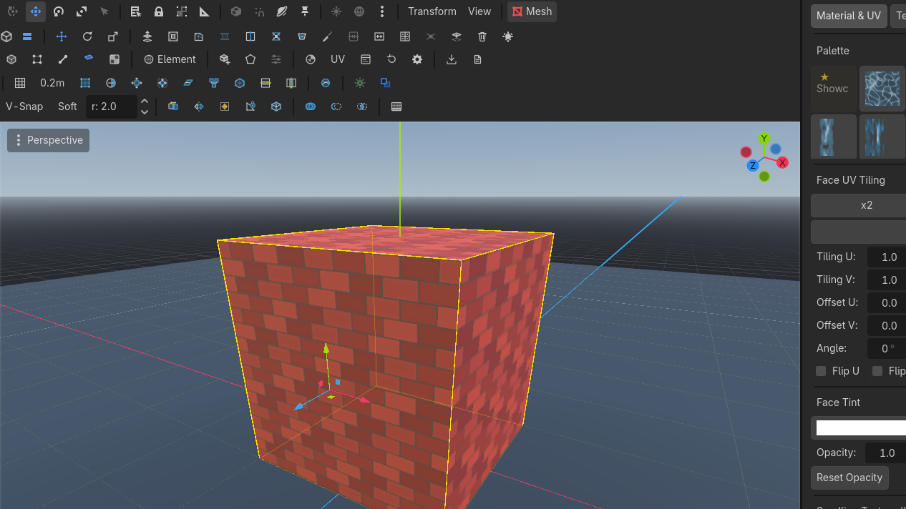
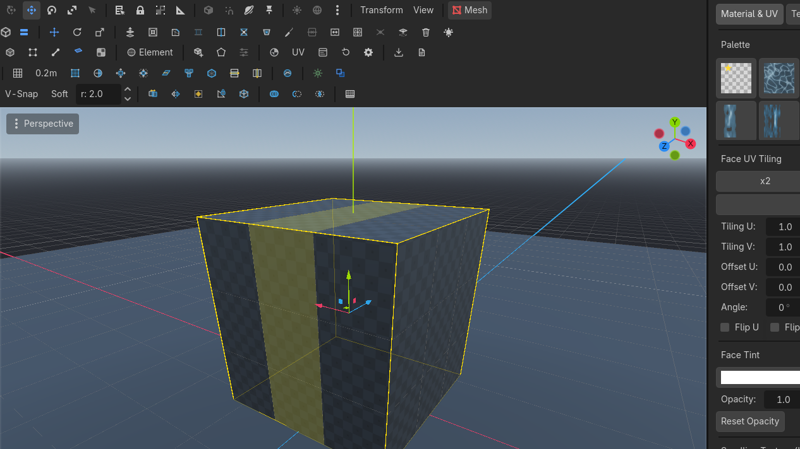

Selecting
Five modes. Cyan hover, yellow selection. Switching modes converts the selection. Advanced ops grow, shrink, and walk loops.
Modes
| Mode | Default key | What you pick |
|---|---|---|
| ObjectRow 2 · Selection ModesObjectUnbound (rebindable)Object mode: whole-object transforms; clicking selects other nodes natively.Needs: Nothing | toolbar (unbound) | Whole PBMesh nodes |
| Vertex | H | Shared vertices (welded corners move together) |
| Edge | J | Common edges |
| Face | K | Faces, including n-gons |
| Texture | 6 | Faces, but the gizmo transforms UVs |

Hover is cyan. Selection is yellow.
Click language
- Click replaces the selection (the engine's subgizmo API holds one seed id; the plugin expands it).
- Shift+click adds.
- Drag a rubber-band in empty space.
- Edge loop: Alt+click or double-click. Shift+Alt+click / Shift+double-click is the ring (the edges a loop cut consumes).
Mode-switch conversion
Select a face, press J. You now have that face's edges. This is ProBuilder parity. Ops that create faces select their output.
Object mode moves several meshes. Entering an element mode narrows editing to the last-clicked mesh.
Texture mode — move UVs in the 3D view
Texture mode (6) picks faces like face mode, but the move/rotate/scale gizmo transforms the selected faces' UVs, not their geometry: slide a texture along a wall, spin a floor's grain, scale a repeating tile — without opening any panel. Face-mode gestures like Shift+move extrude do not fire here; every drag is a pure UV transform, and the whole drag undoes as one step.
Details worth knowing:
- The gizmo acts around the selection's UV centre, so rotate/scale pivot on what you selected.
- A face you have texture-moved becomes manual: auto-UV stops re-anchoring it, so your placement survives edits and resizes. Geometry changes still carry the UVs along.
- Texture mode is the quick 3D-side tool. For island-level work — projections, seam sewing, texel density — use the 2D UV editor.

Advanced suite (row 3)
Expands the active selection outward by one ring of adjacent elements.
Flood-selects all adjacent coplanar faces sharing the same geometric plane.
Selects the full quad-strip face loop passing through the selected face.
| Button | Default key | Effect |
|---|---|---|
| All | — | Every element of the current mode |
| Invert | Ctrl+I | Invert |
| Grow | Alt+G | Expand one ring |
| Shrink | Shift+Alt+G | Contract by the boundary |
| Coplanar | Alt+C | Adjacent coplanar faces |
| Similar | — | Faces sharing the material |
| Boundary | — | Open boundary edges |
| Loop | Alt+L | Face loop along a quad strip |
| Ring | Alt+R | Perpendicular face ring |

Use cases
Retexture one wall
Face mode. Click one wall face.  Coplanar
Coplanar


 Row 3 · Selection Suite
Row 3 · Selection Suite CoplanarAlt + CSelects all adjacent coplanar faces.Needs: Face selection. The whole plane selects, even if it is several quads. Assign a material from the dock.
CoplanarAlt + CSelects all adjacent coplanar faces.Needs: Face selection. The whole plane selects, even if it is several quads. Assign a material from the dock.
Find a leak in a floor
Select a floor face.  Grow
Grow


 Row 3 · Selection Suite
Row 3 · Selection Suite GrowAlt + GGrows the selection by one ring of adjacent elements.Needs: A selection repeatedly. If the selection crawls up a wall, that edge is connected — a hole or a T-junction you did not mean.
GrowAlt + GGrows the selection by one ring of adjacent elements.Needs: A selection repeatedly. If the selection crawls up a wall, that edge is connected — a hole or a T-junction you did not mean.
Fill a hole
 Boundary
Boundary


 Row 3 · Selection Suite
Row 3 · Selection Suite BoundaryUnbound (rebindable)Selects the open boundary edges.Needs: A PBMesh in edge mode, or select the open loop, then Fill Hole.
BoundaryUnbound (rebindable)Selects the open boundary edges.Needs: A PBMesh in edge mode, or select the open loop, then Fill Hole.
After multi-selecting objects, an element-mode click edits the last-clicked mesh only. Switch to Object if you meant to move both.